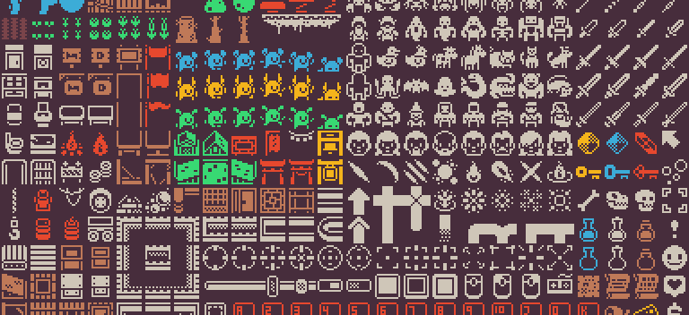

Around August of 2020, I heard about a game jam, a competition to make a video game in a set time period with given restrictions. Generally, there is a strict time limit to create something pertaining to a given theme. Specifically for Miz Jam 1, users were to create an engaging and creative game using a specific 1 bit graphic pack by Kenney.
Because the jam's time frame was rather generous, up to 48 hours over the course of a week, I was delighted to participate. I thought over various ideas before finally settling on a turn-based chess idea where the player would, as the name suggests, protect their king from an army of incoming pieces.
I spent a lot of my time working on the enemy piece AI since basically all of the game would revolve around this. The AI will rank each of its possible moves based on a scoring system. If the move allows it to take valuable pieces from the player, that move earns points. If a move would put the AI's pieces in danger, that move loses points.
By the end of my 32 used hours, I was pretty happy with the AI's performance. Pretty easily it will take the player's pieces if they're not careful about them. I, of course, could have added more UI warnings for this, but there was only so much I could get done before the deadline. Many features had to be cut!
Unfortunately, I missed the upload cutoff due to an unfortunate oversight on my end (forgetting to select the main Godot scene to run before exporting the playable file!), but I had a great time and look to do more of these sorts of projects in the future. They're great for creativity and getting more familiar with some of the trickier UI design tasks in my engine of choice!